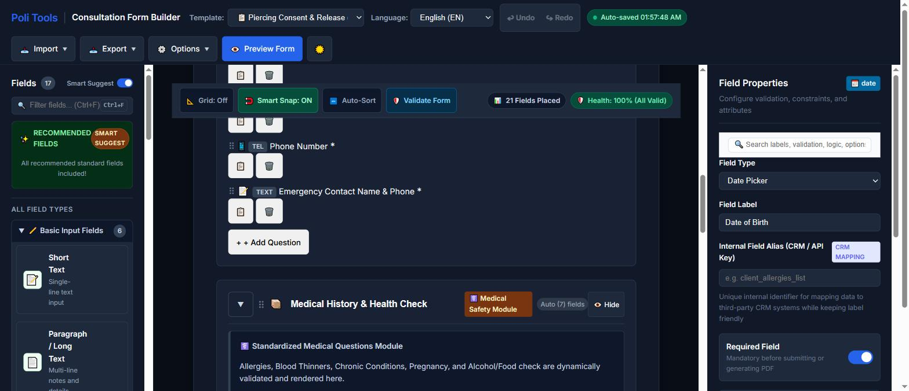
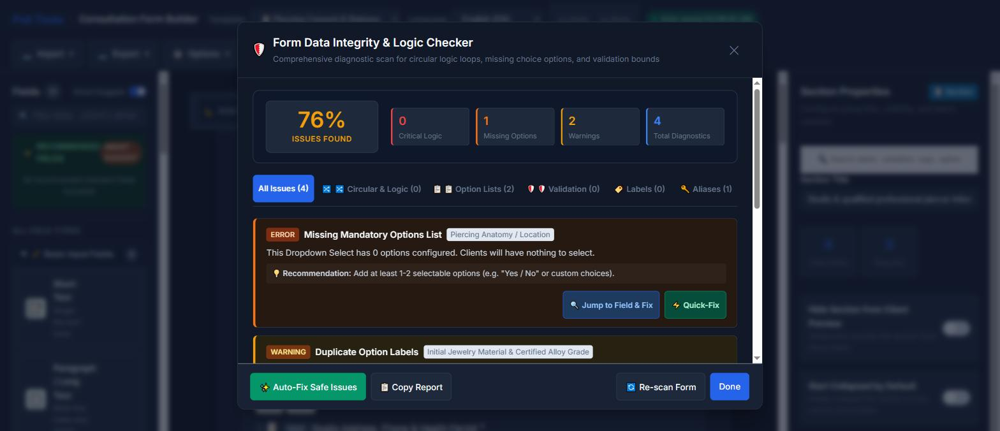
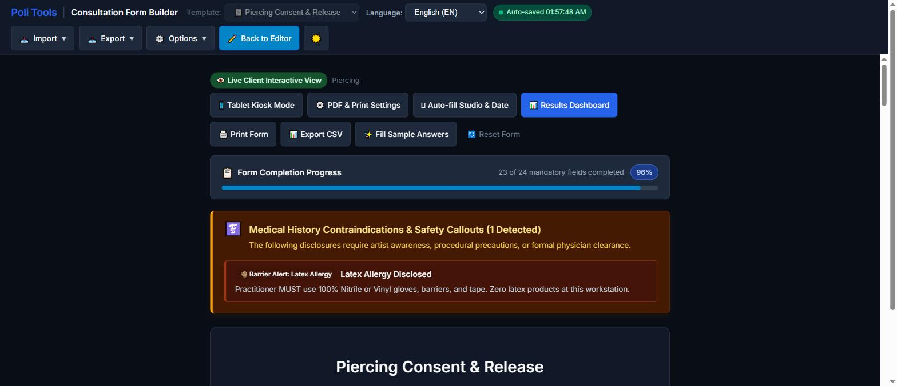

Build, validate and print tattoo and piercing consent forms. Everything runs in your browser, so no client health data ever leaves the device.
The builder opens with a template already selected. Three steps get you to a usable form:

Your work is saved automatically. The builder writes a draft to this browser after every change and offers to restore it when you come back. Clearing site data clears the draft, so export a JSON copy of anything you want to keep permanently (Export → Export JSON, or Ctrl + S).
Eight starting points, each a complete form rather than a skeleton. The piercing consent template, for example, ships with 7 sections and 28 fields, 18 of them mandatory.
| Template | Use it for |
|---|---|
| Tattoo Consent & Release Agreement | Standard tattoo appointments: studio and artist details, medical disclosure, release waiver. |
| Piercing Consent & Release | Piercing appointments: anatomy and placement, jewellery material and gauge, sterilisation lot. |
| Medical History & Health Screening Intake | A standalone health questionnaire when screening happens ahead of the appointment. |
| Multi-Session Tattoo Project Master Agreement | Large pieces booked across several sittings, with per-session tracking. |
| Minor Consent & Legal Guardian Authorization | Where local law permits work on a minor with a guardian present and co-signing. |
| Cover-Up & Rework Assessment | Assessing existing work before covering or reworking it. |
| PMU & Cosmetic Tattoo Consultation | Permanent make-up and cosmetic tattoo consultations. |
| Blank Custom Form | Starting from nothing. |
Templates are a drafting aid, not legal advice. Consent requirements differ by country, state and municipality. Have your final wording reviewed by someone qualified in your jurisdiction before you use it with clients.
Seventeen field types, grouped into categories in the palette. Use the search box (Ctrl + F) to filter them.
Short Text, Paragraph / Long Text, Email Address, Phone Number, Date Picker, Number / Quantity.
Checkbox, Checkbox Group, Radio Choices, Dropdown Menu.
Section Header, Container / Panel, Section / Group.
Notice / Header for standing text, and Digital Signature for the binding sign-off.
Anatomical Body Map for marking placement, and Photo ID & Document Upload.
The palette also has a Smart Suggest toggle. With it on, the top of the palette recommends fields your form is missing for the kind of work it describes.
Click a field on the canvas and the right panel switches from Form Overview to Field Properties:
client_allergies_list. Exports use the alias, so you can rename a question without breaking a spreadsheet or an integration.Select several fields with Shift + click to set required or hidden across all of them at once.
Any field can be shown only when another field has a particular answer, so a client answering "no" to a medical question never sees the six follow-ups underneath it. Set the parent question and the triggering value in the Logic section of the field's properties.
Deeply chained rules can accidentally form a loop, where A depends on B and B depends back on A, leaving both permanently hidden. The integrity checker below detects exactly that.
Validate Form on the canvas toolbar runs a diagnostic scan and scores the form. It catches the mistakes that only show up once a client is standing in front of you:

Preview Form renders the form exactly as a client sees it, with a completion meter showing how many mandatory fields remain.
As medical answers come in, the preview raises safety callouts above the form: disclosures that need artist awareness, a procedural precaution, or formal physician clearance. A disclosed latex allergy, for instance, produces a barrier alert naming the substitution required at that workstation.

The Digital Signature field accepts a mouse, stylus or fingertip and stamps the signing date. PDF & Print Settings controls the export: paper size, margins, and a studio watermark or logo.
Print Form opens the browser print dialog against a print stylesheet. Turn on Print after Signature if you want that to happen automatically the moment a client finishes signing.
Export CSV writes the responses out with the CRM aliases as column headers, ready for a spreadsheet or an import into other software.
Tablet Kiosk Mode (in Options, or from the preview toolbar) presents the form one step at a time with large touch targets, for handing a tablet to a client in the waiting area.
Options → Embed / QR Code generates both an iframe snippet for your own website and a printable QR placard clients can scan on their own phone. The embed snippet looks like this:
<iframe src="https://poliinternational.com/tools/form-builder/index.html"
width="100%" height="1000" frameborder="0"
style="border-radius:12px;"></iframe>Import → Bulk Import CSV builds fields from a spreadsheet, which is the fastest way to move an existing paper or digital form across. Upload a file or paste rows directly. Expected columns:
Label,Type,Required,HelperText,Options
Emergency contact,text,true,Full legal name,
Preferred language,select,false,Pick your main language,English;French;Thai
Are you pregnant or breastfeeding?,radio,true,Required for safety,Yes;NoExport → Field ID Map produces a reference of every question, its internal alias, data type and validation rule, as JSON, CSV or a sample webhook payload. That is the document to hand a developer wiring the form into other systems.
The interface and the templates are available in seven languages: English, French, Italian, German, Spanish, Dutch and Portuguese. Use the Language dropdown in the header. Switching translates both the builder's own controls and the field labels of the form you are building, so you can hand a French client a French consent form.
Your choice is remembered in this browser. Fields you have written yourself stay exactly as you typed them.
| Keys | Action |
|---|---|
| Ctrl + Z | Undo the last action or field edit |
| Ctrl + Y / Ctrl + Shift + Z | Redo |
| Shift + click | Select multiple fields for bulk actions |
| Ctrl + D | Duplicate the selected field or block |
| Delete / Backspace | Delete the selected fields |
| Ctrl + S | Export the form schema as JSON |
| ↑ ↓ ← → | Nudge the selected fields by 5px |
| Tab / Shift + Tab | Cycle through field configuration properties |
| Ctrl + F | Filter the palette or search field properties |
| Esc | Deselect and return to Form Overview |
Deleted fields go to a Recently Deleted bin at the bottom of the canvas, so an accidental deletion is recoverable even after several more edits.
Nothing you type reaches our servers. The builder makes no network requests other than loading its own translation file. Forms, client answers, signatures and generated PDFs are created and stored in your browser only.
Practical consequences worth understanding:
Export a JSON copy of any form template you rely on, and archive completed consent PDFs wherever you already keep client records.
Yes, with no account and no usage limit. You can also embed it on your own site at no cost.
Electronic signatures are widely recognised, but the standard of proof and the record-keeping requirements vary by jurisdiction. Treat the exported PDF as you would a signed paper form, and confirm the requirements that apply where you practise.
Only by moving them yourself. Use Export → Export JSON on the first machine and Import → Import JSON on the second.
Either it is hidden, or a conditional rule is keeping it hidden because its parent question has not been answered with the triggering value. Run Validate Form; if the parent no longer exists, the checker reports it as orphaned logic.
Upload it under Options → PDF & Print Settings. Like everything else, it is stored in this browser, so it needs uploading again on another machine.
Not through us, by design. The tool has no backend. If you need submissions delivered somewhere, use Export → Field ID Map to get the schema and sample webhook payload, and wire the form into your own system.